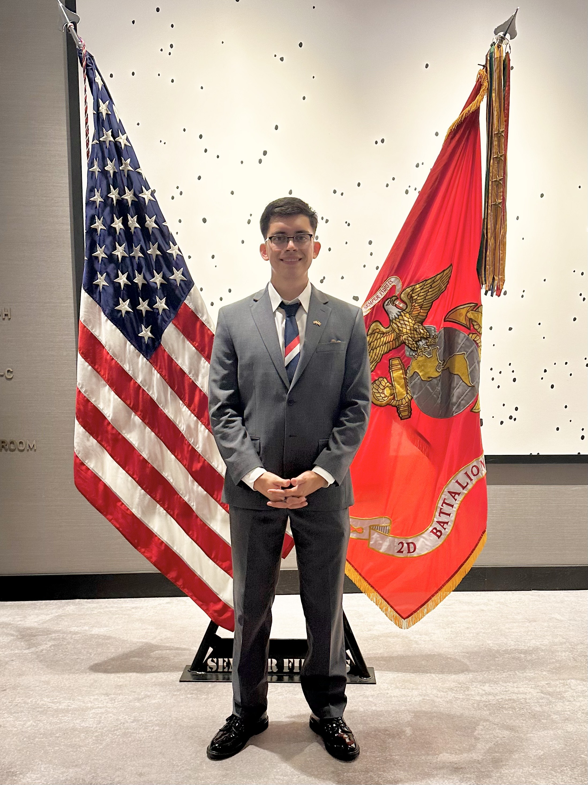

Angel Escobar

Summary
Detail-oriented and motivated individual looking for an opportunity to continue developing in the technology environment
where I may utilize my technical, analytical, and interpersonal skills. Driven to help
achieve business and team objectives to resolve problems in a fast-paced environment in accordance with compliance and
best practices.
Education & Certifications
- ACI Learning - Dallas, Texas, Computer User Support Specialist Program Completion July 2022
Skills
- Proficient in ticketing systems such as ServiceNow and Salesforce
- Using remote channels for first and second echelon problem resolutions
- Analytical in troubleshooting hardware such as computers, laptops, and printers for optimization
- Effectively manage priorities based on organizations process to ensure priority problems are resolved in a timely manner
Work History
- Concentra Urgent Care - Solutions Specialist II
February 2023 - Present
- Proficient in identifying and resolving first and second echelon situations while keeping an average 79% first call
resolution and 98% call and incident quality
- Manage tickets based on the service level agreements set by the organization
- Network printer setup and configuration while also being able to troubleshoot issues on current printers
- Familiarization with Imprivata, IGEL, Windows OS, Citrix Workspace, and Remote Support Clients
- TekSystems - IT Help Desk
August 2022 - February 2023
- Help desk role in assisting end-users troubleshoot software and/or hardware in a timely manner
- Familiarization with Windows OS and IGEL virtual desktops
- Proficient in documenting troubleshooting steps using ServiceNow ticketing system
- Jesse Castaneda State Farm - Personal Account Representative
February 2019 - August 2022
- Proficient usage of CRM system to conduct accurate and precise records of customer information
- Utilize a customer-focused, needs-based review process to educate customers about insurance options
- Customer focused to create a solution for client’s financial goals
- Provide mentorship and coaching to 3 team members on positive customer impact through our products
- United States Marine Corps - Motor Transport Licensing NCO
November 2016 – December 2022
- Demonstrate strong communication between squad of 3-5 Marines ensuring team objectives meet Battalion and Department of Defense standards
- Provide analytical skills in risk management, ensuring security measures are prioritized within platoon to maintain zero security breaches and injuries
- Train and supervise Marines in operating heavy transport equipment within guidelines and provide licenses
Other
Hobbies
Contact Me